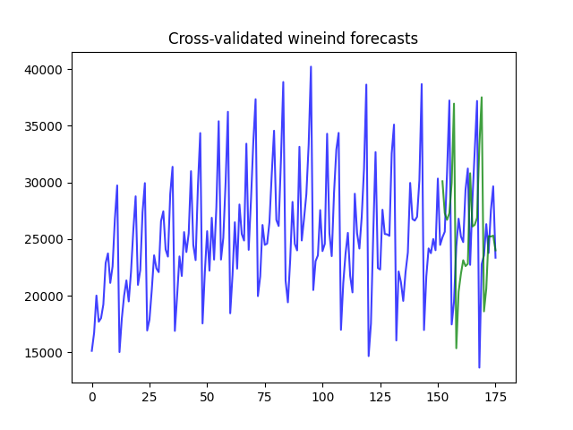

Note
Go to the end to download the full example code.
Cross-validation predictions
In addition to computing cross-validation scores, you can use cross-validation to produce predictions. Unlike traditional cross-validation, where folds are independent of one another, time-series folds may overlap (particularly in a sliding window). To account for this, folds that forecast the same time step average their forecasts using either a “mean” or “median” (tunable).

pmdarima version: 0.0.0
[CV] fold=0 ..........................................................
[CV] fold=1 ..........................................................
[CV] fold=2 ..........................................................
[CV] fold=3 ..........................................................
[CV] fold=4 ..........................................................
[CV] fold=5 ..........................................................
print(__doc__)
# Author: Taylor Smith <taylor.smith@alkaline-ml.com>
import numpy as np
import pmdarima as pm
from pmdarima import model_selection
from matplotlib import pyplot as plt
print("pmdarima version: %s" % pm.__version__)
# Load the data and split it into separate pieces
y = pm.datasets.load_wineind()
est = pm.ARIMA(order=(1, 1, 2),
seasonal_order=(0, 1, 1, 12),
suppress_warnings=True)
cv = model_selection.SlidingWindowForecastCV(window_size=150, step=4, h=4)
predictions = model_selection.cross_val_predict(
est, y, cv=cv, verbose=2, averaging="median")
# plot the predictions over the original series
x_axis = np.arange(y.shape[0])
n_test = predictions.shape[0]
plt.plot(x_axis, y, alpha=0.75, c='b')
plt.plot(x_axis[-n_test:], predictions, alpha=0.75, c='g') # Forecasts
plt.title("Cross-validated wineind forecasts")
plt.show()
Total running time of the script: (0 minutes 40.479 seconds)